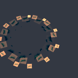

<!doctype html>
<html data-theme="dark"><head><meta charset="utf-8"><title>VFX Sandbox / A / Custom filter, dragging an effect, missing file selected</title>
<link rel="stylesheet" href="tokens.css"><link rel="stylesheet" href="widgets.css"></head>
<body><script src="icons.js"></script><script src="common.js"></script>
<script>
windowA({
	library: { source: 'Custom', query: 'ring', rows: [['cring', 'hover'], ['crune'], ['cburst']], status: '38 custom effects, 3 shown', scroll: false },
	view: { time: '1.50', scene: 'scene-a-nogizmo', extra: `<div class="vtime" style="left:73%;top:29%">X 192.0&#160;&#160;Y -128.0</div>
		<div style="position:absolute;left:73%;top:37%;width:96px;height:52px;margin-left:8px;border:2px dashed #ffffff;border-radius:48px/26px"></div>
		<div style="position:absolute;left:76%;top:39%;width:40px;height:40px;border:1px solid #3574f0;background:#333842"></div>` },
	inspector: { mode: 'missing' },
	timeline: { paused: true, time: '1.50', play: 1.5, selBad: true, rows: [
		['thunder', 0.00, 1.33, 0], ['ring', 0.30, 2.70, 0.50], ['nova', 0.80, 1.80, 0.60], ['holy', 1.10, 1.00, 0.40],
		['cold', 1.40, 2.00, 0, 'bad'], ['cring', 1.60, 2.00, 0, 'off'], ['bliz', 2.00, 3.30, 0]] },
	statusLeft: 'Drop to add FrostRing.mdx here. It starts at the playhead (1.50 s).',
	status: ['!1 missing file', '7 effects', 'Cursor 192.0, -128.0', 'Unsaved changes'],
});
</script></body></html>
